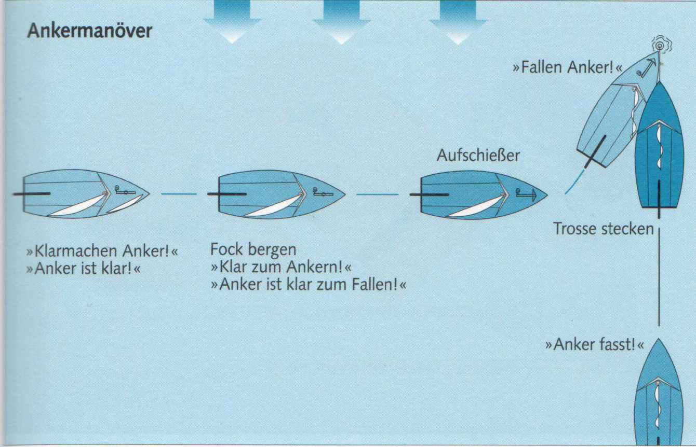

Liegt der Ankerplatz fest, die Fock bergen und auf dem Vorschiff den Anker klarieren. Nachsehen, ob Kette oder Trosse auch tatsächlich im Kettenkasten oder an einer Klampe belegt und der Splint bei Stockankern gesichert ist. Die Trosse klar zum Ausrauschen an Deck in Buchten nebeneinander auslegen.
Mit langsamer Fahrt am Wind den Ankerplatz anlaufen, dort in den Wind drehen oder, bei Strom, gegen den Strom und das Boot auslaufen lassen.
Das Kommando »Fallen Anker!« darf erst dann gegeben werden, wenn das Boot beginnt, achteraus zu treiben. Andernfalls könnte die Trosse direkt auf den Anker fallen und mit Stock oder Flunken unklar kommen. Niemals die Trosse einfach über Bord werfen, sondern auf kleinen Booten Hand über Hand ausgeben. Auf größeren Booten mit schwerem Ankergeschirr gebremst über eine Ankerwinde. Die Trosse öfter mal einrucken lassen, um das Eingraben des Ankers zu unterstützen.
Aufpassen, dass niemand in der Trosse steht.
Erst wenn der Anker wirklich gefasst hat, das Großsegel bergen, um so lange bei einem möglicherweise erforderlichen neuen Ankermanöver sofort manövrierfähig zu sein.
|
Merke |
|---|
| Der Rudergänger entscheidet, wann der Anker über Bord gegeben werden soll, nicht der Mann auf dem Vorschiff. |
|
Kommandotafel Ankern |
|---|
|
Klarmachen Anker! Anker ist klar! Klar zum Bergen des Vorsegels! Vorsegel ist klar zum Bergen! Hol nieder Vorsegel! Klar zum Ankern! Anker ist klar zum Fallen! Fallen Anker! Anker fasst! Klar zum Bergen des Großsegels! Großsegel ist klar zum Bergen! Hol nieder Großsegel! Peilen-loten-klaren! Peilung steht - alles klar! |

Wenn vorhanden, feste Marken peilen und beobachten, ob die Peilung steht, das heißt sich nicht gegenüber dem eigenen Standort verändert. Erst dann kann man sicher sein, dass der Anker nicht schliert. Um ganz sicherzugehen, sollte die Peilung stündlich kontrolliert werden, unbedingt aber in Gewässern mit Ebbe und Flut, wenn der Tidenstrom kentert.
Lotungen rings ums Schiff, um festzustellen, ob man nicht gerade an einem unterseeischen Steilhang ankert, dienen des Weiteren der Sicherheit.
Schliert der Anker, mehr Trosse stecken. Nützt das nichts, unverzüglich ankerauf gehen und ein neues Manöver fahren.
Die Situation ist die gleiche wie beim Ablegen von der Boje. Das Boot ist unmittelbar nach dem Ankerlichten manövrierunfähig. Deshalb muss es genügend Leeraum haben zum Achteraustreiben und um Fahrt aufzunehmen.
Das Manöver: Großsegel setzen, Fock klar zum Setzen oder - auf einer Jolle stets -ebenfalls setzen, aber beizeisen, um bei der Arbeit auf dem Vorschiff nicht behindert zu werden. Langsam an der Trosse zum Anker verholen, bis sie kurzstag steht, das heißt keine Lose mehr hat, also in einem Winkel von etwa 45° zum Anker verläuft. Von diesem Augenblick an muss man damit rechnen, dass der Anker nicht mehr sicher hält.
Ruder zur gewünschten Luvseite legen und warten, bis das Boot auf die Leeseite schwojt. Nun den Anker so schnell wie möglich holen, damit er nicht noch einmal am Grund hakt und den Bug wieder zurückreißt. Fock ausreißen und back, um weiter abzufallen und Fahrt am Wind aufzunehmen. Den Anker auswaschen, an Deck holen und klarieren.
Nicht immer lässt sich der Anker leicht aus dem Grund brechen. Auf kleineren Booten ohne Ankerwinde alle aufs Vorschiff, damit der Bug tiefer eintaucht, dann die Ankertrosse so steif wie möglich holen und belegen. Nun alle aufs Achterschiff. Der Auftrieb des austauchenden Bugs erzeugt eine erhebliche Kraft, die meistens groß genug ist, den Anker aus dem Grund zu brechen.
Sollte sich der Anker jedoch hinter Felsen, eingespülten Wrackteilen oder Ähnlichem verhakt haben, nützt diese Methode nichts. Dann ist gut dran, wer Schnorchel und Taucherbrille dabeihat, um hinabzutauchen und seinen Anker von Hand zu klarieren.
Yachten mit Hilfsmotor werden das Ankerlichten sicherheitshalber unter Maschine besorgen und den Anker mit Maschinenkraft ausbrechen, indem sie langsam über den Anker hinwegfahren.
|
Kommandotafel Ankerlichten |
|---|
|
Klar zum Ankerlichten! Anker kurzstag holen! Anker ist kurzstag! Ankerauf! Anker ist los! Reißaus die Fock! - Fock back an ...bord! |